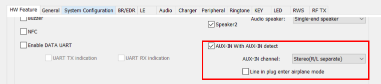
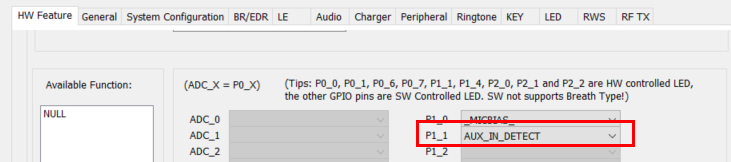
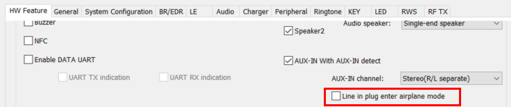
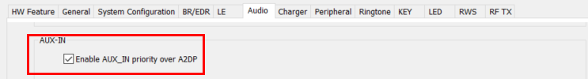
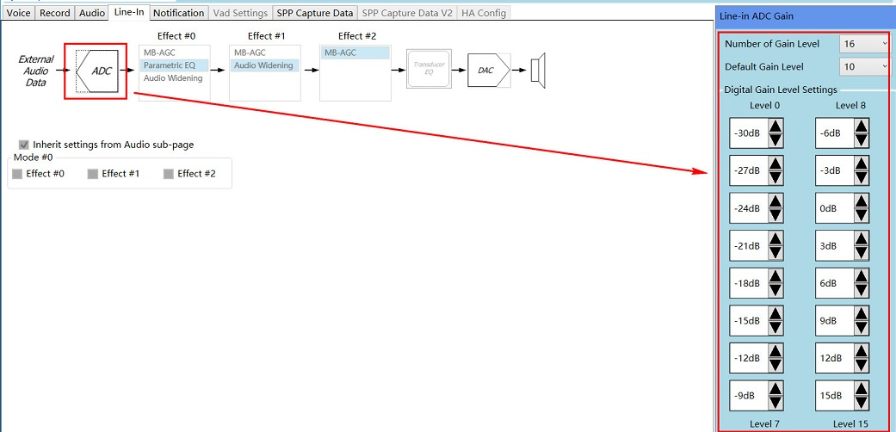
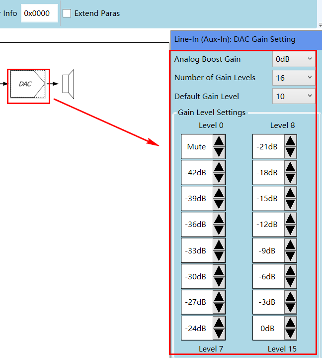
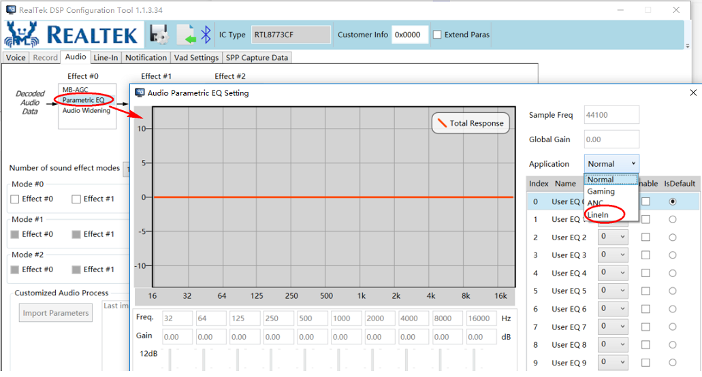

Line In Function Application Note
V1.1
2023/06/23
Revision History
| Version | Date | Description |
| V1.0.0.0 | 2021/10/21 | Stable Release |
| V1.1 | 2023/06/23 | Optimize content |
Contents
Table List
Figure List
Glossary
1 Introduction
The purpose of this document is to give an overview of line in function. The following topics are included:
- Configuration in McuConfigTool
- Configuration in DSPConfigTool
- Source code review
Macro F_APP_LINEIN_SUPPORT should be defined to 1 when line in module is used.
2 McuConfigTool Configuration
Line In mode can be enabled in "HW Feature" page as shown in following figure.

Figure 2-1 Line In Enable
Select line in pinmux as shown in following figure. Line in will be started when this pin pulled low and will be closed when pulled high.

Figure 2-2 Line In Pinmux Config
Line in plug enter airplane mode can be enabled in "HW Feature" page as shown in following figure.

Figure 2-3 Line In Plug Enter Airplane Mode
Line in priority can be enabled in "Audio" page as shown in figure.

Figure 2-4 Line In Priority
3 DSPConfigTool Configuration
ADC default gain can be set in DSPConfigTool as shown in following figure.

Figure 3-1 Line In ADC Default Gain Setting
DAC default gain can be set in DSPConfigTool as shown in following figure.

Figure 3-2 Line In DAC Default Gain Setting
Line in EQ can be set in DSPConfigTool as shown in following figure.

Figure 3-3 Line In EQ
4 Source Code Overview
This section discribes the line in flow in SDK application.
4.1 Line In Initialization
In driver initialization, set interrupt polarity to low and disable io interrupt until power on.
void app_line_in_driver_init(void)
{
}
The following initialization will create line in track and do volume in/out setting.
void app_line_in_init(void)
{
}
Enable line in interrupt when system power on.
void app_line_in_power_on_check(void)
{
...
}
4.2 Line In Interrupt Handler
This chapter shows the process from line in interrupt comes up to excuting line in start or stop action.
{
...
app_line_in_intpolarity_update();
...
gpio_msg.
u.
param = gpio_status;
}
void app_line_in_detect_msg_handler(
T_IO_MSG *io_driver_msg_recv)
{
uint8_t gpio_status;
gpio_status = io_driver_msg_recv->
u.
param;
app_line_in_timer_id, APP_TIMER_LINE_IN_DEBOUNCE, gpio_status, false,
500);
}
static void app_line_in_timeout_cb(uint8_t timer_id, uint16_t timer_chann)
{
switch (timer_id)
{
case APP_TIMER_LINE_IN_DEBOUNCE:
{
...
}
}
...
}
static void app_line_in_handler(bool is_in, bool first_power_on)
{
uint8_t app_idx = app_get_active_a2dp_idx();
bool allow_line_in_start = true;
APP_PRINT_INFO2(
"app_line_in_handler: is_in %d, is_playing %d", is_in, is_playing);
if (is_in)
{
...
app_line_in_start_line_in();
}
else
{
...
app_line_in_stop_line_in();
}
...
}
4.3 Line In Volume Adjust
Following MMI can be used to adjust line in volume level.
void app_line_in_volume_up_handle(void)
{
...
audio_line_volume_out_set(app_line_in_handle, curr_volume);
}
void app_line_in_volume_down_handle(void)
{
...
audio_line_volume_out_set(app_line_in_handle, curr_volume);
}